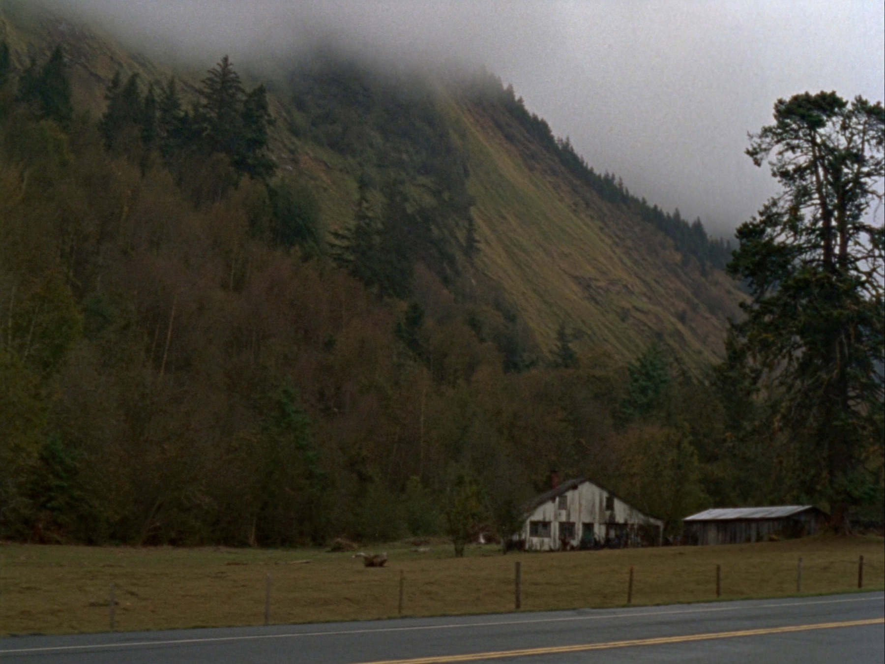

Rural homes, acreage, and timber ground on well and septic. Forest zoning and deferral questions are common. Access and road maintenance deserve careful review.
And the part I do everywhere: Bare land is the purchase with the most upside and the most ways to get hurt. A beautiful parcel that cannot get a septic approval, cannot get a well, or cannot legally get a house on it is an expensive view. Feasibility first, then romance.
Generic advice is worthless on a decision this size. This is what land & lots actually involves in Noti, as opposed to anywhere else in the county.
Zoning does more work here than acreage does. Farm and forest zones in Lane County exist to keep working land working, and they put real limits on new dwellings, second homes for family, and some business uses. A dwelling right is verified through a land use application, not inferred from how many acres are on the listing. If your plan involves building anything, get the answer from Lane County planning in writing before your contingencies expire. Forest and farm zoning with real dwelling limits.
On unsewered land, a site evaluation determines whether and where a system can go, and that answer usually decides where the house sits. Lane County runs this process and it requires test pits dug on the property. Do it during your inspection period. Buying land first and asking later is how people end up owning a view they cannot build on.
Wildfire risk affects insurance availability and price in this part of the county, and it is the item most likely to surprise a buyer late. Get a written quote during your inspection period rather than assuming coverage will be routine. It is also worth asking about defensible space around the structures, since it affects both your premium and your risk.
Driving down a road is not the same as having a recorded legal right to use it. Look for easements, road maintenance agreements, and any seasonal access limits. Then get a written utility estimate for bringing power to the building site, because distance and terrain drive that number and it can rival the price of the land itself.
This is genuinely remote property, not a subdivision with a view. You take on your own water and waste, longer drives for everything, and weather that occasionally takes the power out. In exchange you get room, quiet, and neighbors who show up with equipment when you need it. Most people who move out here would not go back. The ones who struggle are almost always the ones nobody told in advance.
Noti is a small rural community west of Veneta on the highway toward the coast, surrounded by timber and farm ground. It is genuinely rural, quiet, and priced accordingly. For people who want acreage and do not need to be close to the city, it is worth a look.
| ZIP codes | 97461 |
| Known for | Highway 126 · Long Tom River · Surrounding timberland · Fern Ridge nearby |
| Schools | Fern Ridge School District serves the area. |
| Getting to town | West toward the coast range |

You want someone who combines real land & lots experience with parcel-level knowledge of Noti. Brett Herring works Noti as part of his core Lane County territory with The Operative Group at Real Broker, LLC, and lives in Springfield. Call or text 541-968-9422 for a straight local conversation with no pressure attached.
Rural homes, acreage, and timber ground on well and septic. Forest zoning and deferral questions are common. Access and road maintenance deserve careful review.
It is a soil test that determines whether and where a septic system can go. If you plan to build on unsewered land, yes, you need one, and ideally you want the answer before you commit.
It varies enormously with distance and terrain. Get a written estimate from the utility during your inspection period. It is a real number that some buyers do not think to ask for until too late.
Sometimes, with a temporary permit, and sometimes not at all. It is a county-specific answer with time limits attached. Verify it before you plan your whole build around it.
Buying your first place, selling acreage out east, or landing here from out of state — start with a conversation. No pressure, no script, no disappearing act.
541-968-9422